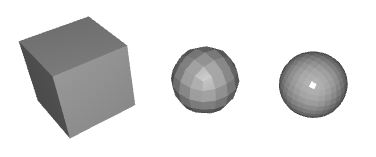
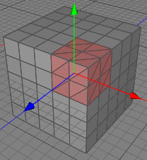
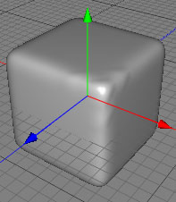
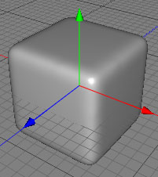
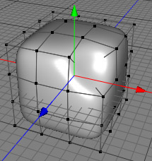
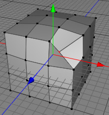
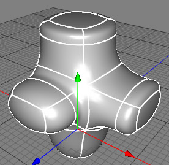

|
Subdivision ModifierThe subdivision modifier allows you to take a simple polygon object and smooth its surfaces by exponentially increasing the number of polygons the shape is made from. It is functionally the same as the subdivide tool, although the subdivision object is a modifier object, meaning that you don't destroy the original mesh - this allows you to modify the original polygon object and see those changes reflected in the subdivided result. In combination with the parametric polygonobjects, this gives you a lot of freedom and power.  In the example above, you can see that the first box is a simple parametric polygon object. The second and third items are subdivided objects, each having the same box as it's control mesh - note how the shape of the box is smoothed by increasing the number of polygons. In the last subdivision object, the Iterations property has been increased to 3. Cheetah3D offers two different subdivision schemes which both supports creases. The first is the classic Catmull-Clark subdivison scheme which most other 3D modelers support too. But the Catmull-Clark subdivision scheme has a handicap. It performs very well on quads but if there are triangles in the mesh artifacts can appear. The Stam-Loop scheme on the other side is an advanced subdivison scheme which uses the best properties from the Catmull-Clark and the Loop subdivison scheme. It therefore behaves much better on mixed meshes which include both quads and triangles. See the pictures below for a better understanding.    Attention: The subdivision modifier will produce meshs with very many polygons, especially when the Iterations property is increased. Take care not to overload your computer by increasing Iterations too high. 2 or 3 is often sufficient for good quality renders. Tips:
 
 Properties
|